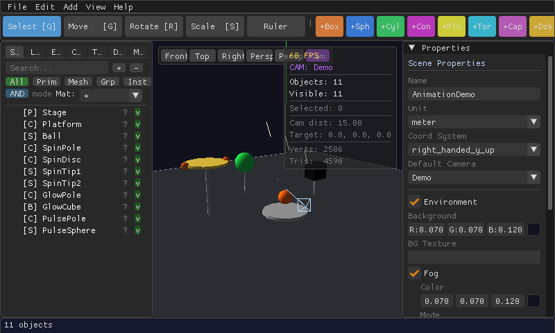

Keyframe Animation
Make objects move, spin, resize, or change color over time using the Timeline.
A keyframe records the state of an object — its position, rotation, scale, color, or visibility — at a specific moment in time. Set two or more keyframes for the same property and MeshCraft smoothly fills in every frame between them.

Creating an animation
- Open the TimelinePress Ctrl+T to show or hide the timeline panel along the bottom of the window.
- Select the object to animateClick it in the viewport or the Scene panel, as usual.
- Move the playheadDrag the timeline's playhead to the moment you want to set — for example, frame 0.
- Insert a keyframePress K to record the object's current position/rotation/scale at that moment.
- Move forward and change somethingDrag the playhead further along the timeline, then move, rotate, scale, or recolor the object, and press K again.
- Play it backPress Space to play or pause. The object now smoothly transitions between your keyframes.
Interpolation — how it moves between keyframes
| Mode | What it looks like |
|---|---|
| Step | Instantly jumps to the next value — no in-between motion. Good for visibility toggles or blinking lights. |
| Linear | Moves at a constant speed between keyframes — simple and mechanical. |
| Cubic (Bézier) | Eases in and out smoothly, like most motion in the real world — the natural choice for organic movement. |
You can set the interpolation mode per keyframe from the timeline, mixing modes within the same animation.
What can be animated
Position, rotation, scale, and visibility on any object, plus material color and certain deform channels — enough to cover doors opening, lights blinking, platforms moving, and simple character motion.
Animations you build in MeshCraft carry over when you export to glTF/GLB, so a door that opens in the editor still opens in Blender, Godot, or Unity.